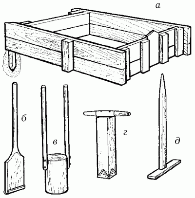
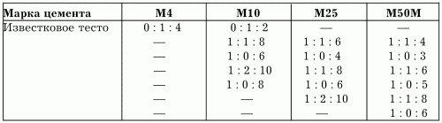
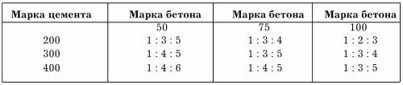

Характеристика строительных растворов.

Строительный раствор – это искусственный материал, состоящий из отвердевшей смеси вяжущего мелкого заполнителя и воды. При приготовлении некоторых специальных растворов добавляют минеральные или органические добавки.
По назначению растворы бывают следующими:
– кладочные;
– специальные;
– отделочные.
По виду используемого вяжущего заполнителя различают монорастворы и смешанные растворы.
В составе монорастворов присутствует один вид вяжущего, а в смешанных – 2–3.
К монорастворам относятся следующие виды растворов:
– глиняные;
– известковые;
– гипсовые;
– цементные.
Помимо этого, существуют и так называемые комбинированные растворы на минеральных и органических вяжущих, например цементно-полимерный.
По плотности растворы бывают тяжелыми, в которых в качестве наполнителя выступает песок, и легкими, где наполнителями служат пемза, шлак или керамзит.
Состав растворов выражают отношением компонентов в условных числах по их массе или объему. При этом на первое место принято ставить основное вяжущее вещество, всегда принимаемое за единицу.
Например, состав цементно-известкового раствора дан как 1: 0,5: 5. Это означает, что для его приготовления на одну часть цемента следует взять половинное количество извести и пять частей наполнителя.
Свойства растворовДо затвердевания, пока растворы находятся в пластично-вязком состоянии, они называются растворными смесями. По назначению различают следующие виды растворных смесей:
– кладочные, используемые при кладке фундаментов, стен из кирпича и природного камня;
– растворы для заполнения и расшивки горизонтальных швов при монтаже стеновых панелей и крупных блоков;
– отделочные, применяемые для оштукатуривания стен, перекрытий и для заводской отделки строительных изделий и конструкций;
– специальные пористые для звукопоглощающих штукатурок;
– особо плотные, водонепроницаемые растворы на кислотоупорных цементах.
Особенность растворных смесей состоит в том, что их укладывают тонкими слоями без механического уплотнения. Как правило, растворные смеси наносят на основание материалов, обладающих способностью впитывать воду.
Растворы отличаются от бетонов отсутствием крупного заполнителя, из чего можно сделать вывод, что растворы – это мелкозернистые бетоны, основным полезным свойством которых является удобоукладываемость (способность растворной смеси распределяться на основании тонким однородным слоем).
Растворные смеси бывают мягкими и жесткими. Мягкая смесь заполняет все неровности основания, равномерно сцепляясь со всей его поверхностью. Жесткая неудобоукладываемая смесь соприкасается с основанием только в отдельных местах, плохо сцепляясь и при этом образуя неодинаковый по плотности и толщине слой.
Применение мягкого раствора позволяет уложить большее количество кирпича, чем при работе с жесткой растворной смесью. Однако при бутовой кладке раствор берется более жесткий, так как уплотнение происходит за счет вибрации.
Другое, не менее важное свойство растворной смеси – водоудерживающая способность. Это свойство предотвращает расслоение при транспортировании, потерю большого количества жидкости при укладке растворной смеси на пористые основания – на кирпич, природный камень туф, легкие бетоны, обладающие способностью вбирать в себя жидкость из растворной смеси, после чего та становится более жесткой.
Таким образом, укладка раствора с недостаточной водоудерживающей способностью приводит к потере его подвижности за счет быстрой утраты влаги. Такой раствор уменьшает прочность кладки. И наоборот, раствор с хорошей водоудерживающей способностью постепенно отдает излишки жидкости, уплотняется и приобретает прочность.
Отрицательные температуры снижают скорость затвердевания и прочность растворов. Так, например, при температуре ниже 5 °C их прочность уменьшается вдвое. В зимний период рекомендуется использовать для каменной кладки раствор марки 75 с добавлением нитрита натрия и понижающих температуру замерзания веществ, благодаря которым растворная смесь сохраняет способность затвердевать даже при низких температурах.
Состав растворов выбирают, исходя из следующих требований:
– степени подвижности растворной смеси, необходимой для укладки камней или расшивки швов;
– заданной марки раствора;
– условий работы (наземная, подземная или подводная кладка).
Помимо цементных, могут применяться и известковые растворы, состоящие из одной части известкового теста и трех частей песка. Количество воды определяет подвижность таких растворов (они могут быть жесткими, пластичными или совсем жидкими). Для каменной кладки часто используют и цементно-известковые растворы.
В условиях строительной площадки приготовление растворов осуществляется с помощью специальных машин – растворосмесителей.
Приготовление бетонного раствора и бетонаДля приготовления бетонного раствора используют цемент, чистый песок, гравий и воду. Большое значение придается выбору песка. Речной песок, хотя и характеризуется относительной чистотой, имеет гладкую поверхность, поэтому плохо сцепляется с другими компонентами растворной смеси, а овражный, хотя и считается более предпочтительным, перемешан с глиной, поэтому перед применением его тщательно промывают.
При приготовлении раствора особое внимание уделяют соотношению песка и гравия: второго компонента должно быть примерно вдвое больше, чем первого. Важно также правильно определить необходимое количество еще одной составляющей растворной смеси – воды. При ее добавлении нужно помнить, что в дождливую погоду песок и гравий содержат до 20 % влаги, составляющей обычно в бетонном растворе 60–75 % от общей массы.
Бетонную смесь готовят в деревянном ящике с обитым железом днищем.

Рис. 9. Приспособления для приготовления бетонной смеси: а – деревянный ящик для приготовления бетона; б – узкая трамбовка с металлической обивкой; в – круглая трамбовка с двумя ручками; г – квадратная трамбовка с металлической обивкой; д – гладилка для разравнивания бетона.
Отмеренное количество цемента высыпают в деревянный ящик, добавляют песок и перемешивают до получения однородной массы. После этого добавляют необходимое количество гравия, снова перемешивают и только после этого добавляют воду. Полученную смесь еще раз тщательно перемешивают до однородной консистенции. Объем раствора должен быть таким, чтобы его можно было израсходовать за 50 минут.
Прочность бетонов и бетонных растворов на сжатие характеризуется маркой, которая зависит от марки заполнителя и связующего компонента, а также от их соотношения в растворной смеси и обозначается в кг/см2. Марку выбирают в зависимости от условий работы и влажности грунта. Например, для кладки цоколей, фундаментов и стен подвалов применяют растворы марок от 25 до 50.
Составы растворов по объему и их марки приведены в табл. 2.
Таблица 2. Состав и марка растворов (цемент: известковое тесто: песок)
Бетон готовят практически так же, как и бетонный раствор, только в последнюю очередь добавляют гравий или щебень и тщательно перемешивают массу. Иногда, если бетона требуется очень много, для его приготовления используют бетономешалку, поскольку в домашних условиях получить бетон хорошего качества очень тяжело.
Состав в объемных частях и марки бетона приведены в табл. 3.
Таблица 3. Состав и марка бетона (цемент: песок: щебень или гравий)
Следует отметить, что бетон М50 применяют только для заливки ленточных фундаментов, из бетона М75 делают столбчатые фундаменты для деревянных домов, а бетон М100 используют при кладке стен подвалов во влажных грунтах, а также при строительстве столбчатых фундаментов со стенами из кирпича или опилкобетона, шлакобетона и арболита.
Хорошее перемешивание и последующее трамбование бетонной смеси почти вдвое увеличивают прочность бетонного камня. Как правило, укладку и трабование бетона осуществляют слоями не более 15 см, причем последнюю из названных операций продолжают до тех пор, пока на поверхности камня не выступит цементное молоко.
Слишком быстрое схватывание бетонной смеси приводит к образованию трещин в массиве бетона, поэтому в тот момент, когда происходит его затвердевание, его поддерживают во влажном состоянии. Для этого через 2 часа после схватывания бетонную поверхность накрывают гигроскопичными материалами – такими, как опилки, стружки или мешковина, которые в дальнейшем регулярно смачивают водой. При высокой температуре воздуха первые 3 дня это покрытие бетонной поверхности поливают каждые 3 часа, а в последующие дни – дважды в день. Каждый раз после полива гигроскопичный слой накрывают полиэтиленовой пленкой. Спустя неделю опалубку снимают.